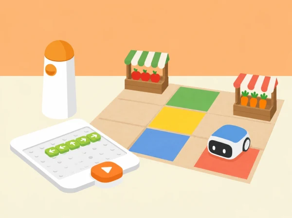

Com organitzem quatre encàrrecs de temporada perquè MatataBot visite les parades correctes, descarregue cada producte i complete el recorregut dins del pressupost fictici?
La classe organitza el mercat de proximitat d’una cooperativa escolar. Quatre targetes de producte viatgen juntes sobre un suport pla del robot; en cada parada es retira la targeta corresponent i es conta una microhistòria sobre qui la necessita i per què. El repte combina orientació i programació tangible amb una extensió matemàtica de quantitats, suma de preus ficticis i comparació de rutes. Els aliments són targetes il·lustrades: no es manipula ni es jutja el menjar de ningú.
Prepareu MatataBot, torre de comandaments i tauler del Coding Set; una quadrícula pròpia de 5 × 5 caselles; quatre parades amb noms i pictogrames (fruita de temporada, hortalisses, cooperativa i cuina escolar); quatre targetes de producte que càpiguen planes sobre un suport de paper lleuger; targetes de comanda, fletxes, llapis, moneda simbòlica i full de registre. Situeu parades i obstacles amb espai perquè el robot puga avançar, retrocedir i girar sense enganxar-se. Comproveu primer que el suport no tapa sensors, rodes ni elements de programació. Si no es pot carregar amb estabilitat, una persona transporta les targetes mentre MatataBot guia la ruta, i l’equip anota aquesta variant.
Useu valors inventats per a l’exercici: quatre productes amb preus enters entre 1 i 5 monedes i un pressupost de 12. Es pot canviar el pressupost o treballar amb preus sense moneda per adaptar el càlcul; no són preus reals del mercat ni recomanacions de compra.
Recolliu el mapa anotat, les seqüències en targetes, les prediccions de ruta, la suma del pressupost fictici, la taula de proves i les microhistòries. Observeu si l’alumnat (1) relaciona orientació, girs i desplaçaments; (2) programa i depura una ruta a partir del punt concret on divergeix; (3) recorda i lliura els quatre encàrrecs en l’ordre acordat; i (4) representa cost i distància amb unitats diferenciades i explica les limitacions de la prova. Es pot valorar amb tres nivells: ho resol amb modelatge; ho resol amb alguna pista; ho resol i ho explica de manera autònoma. No es puntua la velocitat ni que la ruta siga la més curta si la prova no compara totes les alternatives.
Oferiu mapa gran, alt contrast, fletxes tàctils, pictogrames de parades, peces mòbils i lectura en veu alta. Es pot participar com a planificador/a, programador/a de peces, responsable de parades, narrador/a, observador/a d’orientació o registrador/a; feu rotar les responsabilitats sense exigir manipulació fina ni exposició oral individual. Reduïu el mapa a tres parades o retireu obstacles si cal, i amplieu-lo amb una ruta alternativa o una repetició si el grup està preparat. Permeteu calcular amb objectes, dibuix, recta numèrica o nombres. Les històries són fictícies i no demanen revelar hàbits, salut o situació econòmica personal.
Les parades poden representar un mercat de la comarca i les targetes poden parlar de productes de temporada consultats en una font local que el centre date i cite. Si no s’ha fet aquesta verificació, etiqueteu la selecció com a exemple fictici i no afirmeu que un producte és de temporada. El pressupost és una variable matemàtica de joc, no una prova de com compra una família; es pot substituir per “nombre màxim d’encàrrecs” per evitar parlar de diners.
La fitxa oficial Delivery Animals proposa una sessió de 45 minuts: revisar moviments, preparar quatre llocs i quatre animals, situar obstacles i transportar cada figura fins a la destinació, amb un relat per visita; amplia després a quatre destinacions en un mateix recorregut i a celebrar lliuraments amb música. Aquesta proposta conserva quatre càrregues, quatre destinacions, obstacles, ordre de visita, canvi d’orientació i narració; transforma els animals i llocs en encàrrecs i parades d’un mercat local, i hi afegeix una investigació de preus ficticis i comparació de rutes. Els mapes, targetes, històries i imatge són propis; la possible repetició de codi és una extensió i depén dels blocs reals del set.